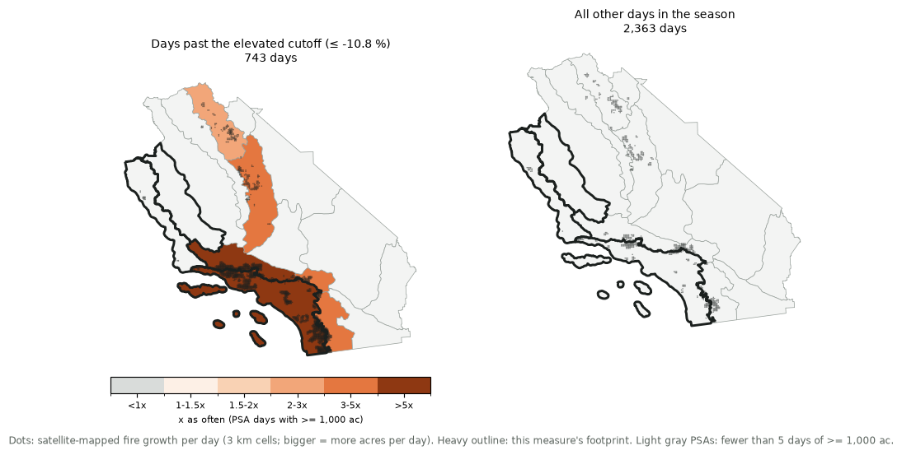

Calibrated predictor · Southern California, offshore season (Oct, Nov, Dec, Jan) · footprint: Central Coast, Central Coast Interior and South Coast · today's run 2026-10-17 10:25 PT
The lowest footprint-average 2 m relative humidity of the fire day, from ERA5 at 00 and 12 UTC (the models' times). Shown as the departure from the 2001–2025 ERA5 normal for the date (±15 days), so a positive value means hotter-drier-windier (or, for humidity, a negative value drier) than usual for that time of year. Scoring the raw value mostly rewarded the season itself.
Area-wide afternoon dryness: low humidity everywhere in the footprint dries fine fuels and slows overnight recovery.
An area-wide measure: no single station; the footprint's PSAs are outlined in the maps below.
This measure is scored against fire growth inside its footprint: Central Coast, Central Coast Interior and South Coast, PSAs SC06 Central Coast Interior, SC07 Central Coast, SC08 South Coast. Only acres that satellites saw burning inside those PSAs count toward its big growth days.

Left: fire growth per day on the offshore season days past the elevated cutoff, with each PSA shaded by how much more often it had a day of at least 1,000 acres on those days than on the other days of the season. Right: growth per day on all the other days. If the measure matches where its weather acts, the left map's growth and shading should concentrate inside the outlined footprint.
On a typical offshore season day, 1.0% of days have at least 5,000 acres of satellite-mapped fire growth in Central Coast, Central Coast Interior and South Coast. When this measure is past the elevated cutoff, such days are about 3.6 times as likely as usual for the same time of year. The cutoff is the most inclusive one that reaches ×2 with at least 25 days of history behind it.
How the odds grow as the cutoff gets stricter (lower values). Cutoffs beyond the "high" mark rest on fewer days, so that end of the curve is noisier.
The share of offshore season days at each value: all days (dashed) and days with ≥5,000 acres of growth (orange). The further the orange curve sits toward the cutoff side, the more useful the measure.
Central Coast, Central Coast Interior and South Coast, offshore season, 2001–present. Acres are only those inside the footprint; fire names and acres from satellite detections inside mapped perimeters. 27 of 32 days with ≥5,000 acres were past the elevated cutoff ("no obs": a station didn't report that day).
| Fire day | Acres (footprint) | Main fire (its acres) | Run (mi) | PSA | ERC pct | Value | Past cutoff? |
|---|---|---|---|---|---|---|---|
| 2003-10-26 | 234,824 | CEDAR (152,345 ac) | 19.8 | SC08 | – | -19.9 | high |
| 2007-10-22 | 125,137 | WITCH (83,697 ac) | 11.8 | SC08 | 82nd | -30.3 | high |
| 2003-10-25 | 107,649 | SIMI (53,810 ac) | 20.3 | SC08 | – | -8.9 | no |
| 2007-10-21 | 97,970 | WITCH (73,136 ac) | 22.8 | SC08 | 67th | -26.4 | high |
| 2018-11-09 | 70,420 | WOOLSEY (70,395 ac) | 11.7 | SC08 | 70th | -26.0 | high |
| 2017-12-04 | 60,375 | THOMAS (63,056 ac) | 22.3 | SC08 | 69th | -25.6 | high |
| 2007-10-23 | 52,913 | POOMACHA (37,785 ac) | 14.0 | SC08 | 91st | -26.0 | high |
| 2017-12-05 | 38,047 | THOMAS (40,088 ac) | 5.6 | SC08 | 79th | -34.9 | high |
| 2003-10-27 | 33,530 | SIMI (9,944 ac) | 2.9 | SC08 | – | -16.2 | high |
| 2008-11-15 | 28,882 | FREEWAY COMPLEX (26,309 ac) | 15.1 | SC08 | 92nd | -23.3 | high |
| 2018-11-08 | 27,159 | WOOLSEY (22,773 ac) | 11.8 | SC08 | 53rd | -18.7 | high |
| 2020-10-26 | 22,857 | SILVERADO (12,259 ac) | 9.0 | SC08 | 18th | -27.2 | high |
| 2025-01-07 | 19,368 | PALISADES (15,765 ac) | 10.5 | SC08 | 65th | -20.5 | high |
| 2024-11-06 | 18,073 | MOUNTAIN (18,073 ac) | 13.1 | SC08 | 73rd | -25.8 | high |
| 2017-12-09 | 17,700 | THOMAS (56,189 ac) | 8.7 | SC09 | 78th | -34.0 | high |
Run: how far that day's newly burned area reached beyond everything the fire had burned before, from the 100 m satellite day-of-burn grid (on a fire's first day, the span of that day's burn). ERC pct: energy release component in the PSA where the fire grew most, ranked against that PSA's 2005–present history.
How the odds of a ≥5,000-acre day in Central Coast, Central Coast Interior and South Coast change when this measure is past its elevated cutoff and the fuels are critically dry: ERC (energy release component) at or above the 90th percentile, averaged over the footprint's PSAs (NFDRS from the toolkit's RAWS reference data, 2005–present).
| Days | Share with ≥5,000 ac | × season base (1.0%) | |
|---|---|---|---|
| Past cutoff and ERC ≥ 90th | 34 days | 2.9% | ×2.9 |
| Past cutoff, ERC below 90th | 669 days | 3.4% | ×3.3 |
| Not past cutoff, ERC ≥ 90th | 24 days | 0.0% | ×0.0 |
| Neither | 1,856 days | 0.1% | ×0.1 |
Weather and fuels multiply: the same wind event does far more on critically dry fuels. Days before 2005 have no NFDRS history here and are left out of this table.
Growth isn't the only question: offshore and dry days also start the fires that become large. On the 743 offshore season days past the elevated cutoff, a fire that went on to burn at least 1,000 acres started in Central Coast, Central Coast Interior and South Coast on 32 of them (4.3% of those days, against 1.3% on a typical offshore season day); about ×3.5 the usual odds for the date. That's 82% of the 39 large-fire starts there since 2001.
Fires and start dates from the satellite fires table (MTBS / WFIGS perimeters ≥ 1,000 acres; discovery from FPA FOD / InFORM).
% of each ensemble's members past the elevated cutoff (≤ -10.8 %), by fire day.
| Model | 10/17 | 10/18 | 10/19 | 10/20 | 10/21 | 10/22 | 10/23 | 10/24 | 10/25 | 10/26 | 10/27 | 10/28 | 10/29 | 10/30 | 10/31 |
|---|---|---|---|---|---|---|---|---|---|---|---|---|---|---|---|
| All models | 99 | 10 | 0 | 1 | 0 | 0 | 2 | 18 | 23 | 22 | 18 | 11 | 5 | 7 | 5 |
| ECMWF AIFS ENS (AI) | 96 | 0 | 0 | 2 | 0 | 0 | 0 | 0 | 4 | 6 | 8 | 4 | 2 | 6 | 2 |
| ECMWF IFS ENS (physics) | 100 | 0 | 0 | 0 | 0 | 0 | 0 | 0 | 0 | 4 | 4 | 0 | 0 | 2 | 4 |
| NOAA GEFS (physics) | 100 | 29 | 0 | 0 | 0 | 0 | 6 | 55 | 65 | 55 | 42 | 29 | 13 | 13 | 10 |
| 10/17 | 10/18 | 10/19 | 10/20 | 10/21 | 10/22 | 10/23 | 10/24 | 10/25 | 10/26 | 10/27 | 10/28 | 10/29 | 10/30 | 10/31 | |
|---|---|---|---|---|---|---|---|---|---|---|---|---|---|---|---|
| Forecast ERC percentile (area mean, FEMS) | 87 | 87 | 78 | 60 | 41 | 37 | 36 | 36 | 36 | 36 | 36 | 36 | 36 | 36 | 36 |
| × usual odds of a ≥5,000-acre day | ×3.3 | ×0.4 | ×0.1 | ×0.1 | ×0.1 | ×0.1 | ×0.1 | ×0.7 | ×0.8 | ×0.8 | ×0.6 | ×0.4 | ×0.2 | ×0.3 | ×0.2 |
Odds combine this measure (each member past the cutoff or not) with the forecast fuels (ERC ≥ the 90th percentile = critically dry), using the history in "Weather + fuels" above. Faded: past the 7-day FEMS forecast, the last day's fuels carried forward.
Darker = more members past the cutoff. The models are weighted equally in "All models". How to use it: Reading the calibrated outlook.